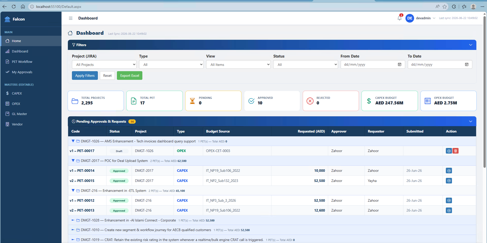
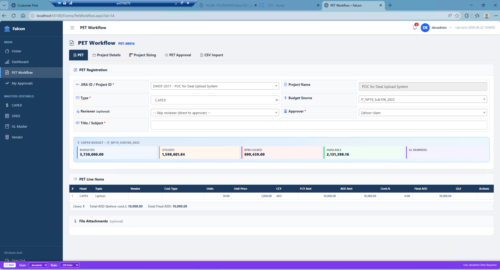
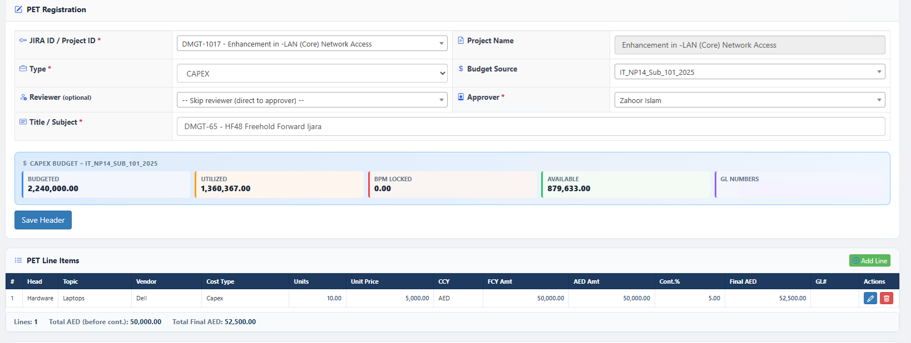
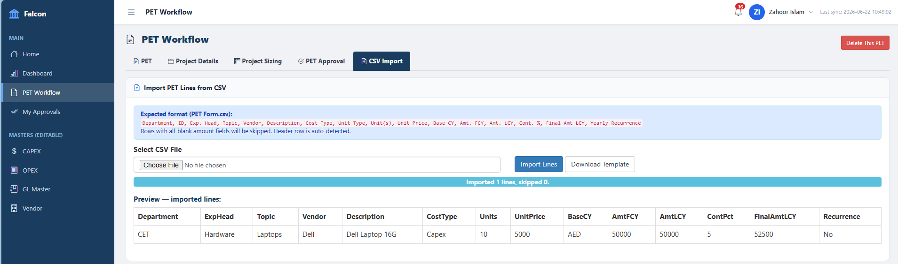
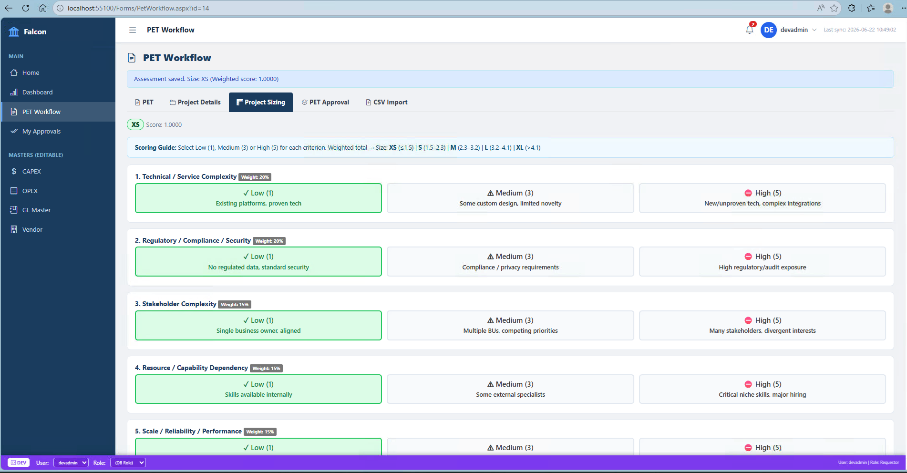
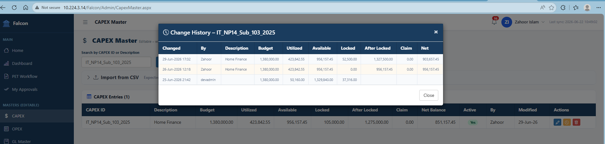

Why the Falcon Application?
Without Falcon
- PET approvals were handled via email chains
- No real-time visibility on budget availability
- No audit trail for approval decisions
- BPM requests created without chief approval
- CAPEX / OPEX data managed in disconnected spreadsheets
- No project sizing or risk assessment step
With Falcon
- Structured PET approval workflow before BPM creation
- Live budget snapshot — Budgeted, Utilized, Locked, Available
- Full audit history on every status change
- Chief approval secured before BPM is raised
- CAPEX / OPEX masters managed centrally and updated via CSV
- Built-in weighted project sizing assessment (XS → XL)
Core Rule: A BPM request can only be created after the PET (Pre-Execution Task) has been approved by the designated Chief / Approver. Falcon enforces this gate automatically.
JIRA Integration
Projects sync automatically from JIRA, ensuring every PET is tied to a real, tracked project.
Budget Governance
Approver sees the budget impact in real time before committing. Locked amounts prevent over-commitment.
Compliance Ready
Every action is logged with timestamp, user, from-status and to-status — ready for audit at any time.
How the Application Works — Overview
JIRA Project Sync
A background sync job pulls active projects from JIRA. Users select these when creating a PET — no manual entry of project codes.
Master Data Upload
CAPEX Master and OPEX Master are loaded via CSV import in the Admin section. Each entry carries budget, utilization, GL numbers and availability.
PET Workflow
Requestor fills in the PET form, adds line items (manual or CSV), runs project sizing and submits for approval.
Review Stage (Optional)
If a Reviewer is assigned, they receive the PET first. They review and either recommend to the Approver or send it back.
Approval Stage
The Approver sees the full budget impact before deciding. They can Approve, Reject or Send Back. Budget locked amount updates on approval.
Post-Approval
The approved PET unlocks BPM creation. The CAPEX/OPEX history records the budget movement with full traceability.
Landing Page — Dashboard
Total Projects
Live count of all JIRA-synced projects available for PET creation.
Total PETs
All PET requests raised across all projects, any status.
Pending
PETs currently awaiting review or approval action.
Approved
PETs approved — budget locked and BPM creation enabled.
Navigation: Click PET Workflow in the left menu to start a new PET request or continue a draft.
Filters: Filter by Project (JIRA), Type, View, Status and Date range. Export results to Excel.

Step 1 — Create PET Request
Select Project
Choose the JIRA Project ID. The Project Name auto-populates.
Select Type
Choose between CAPEX or OPEX based on the nature of the expenditure.
Select Budget Source
Choose the CAPEX/OPEX budget line. The system immediately displays Budgeted, Utilized, BPM Locked and Available amounts.
Select Reviewer Optional
Assign a reviewer to validate before escalating to the Approver. Skip to go directly to the Approver.
Select Approver
Mandatory. The designated Chief who will make the final approval decision.
Click Save Header to save the PET registration and unlock the line-items section.

Step 2 — PET Line Items
Manual Entry (Add Line)
Click Add Line to enter line items one by one. Each line captures:
- Expense Head & Topic
- Vendor
- Cost Type (CAPEX / OPEX)
- Units & Unit Price
- Currency (CCY) & Foreign Currency Amount
- AED Amount & Contingency %
- Final AED Amount & GL Number
File Attachments Optional
Supporting documents (quotes, SOW, contracts) can be attached to the PET request for the Approver's reference.

Step 2 (Alt) — CSV Import for Line Items
Navigate to CSV Import Tab
Inside the PET Workflow page, click the CSV Import tab.
Prepare Your CSV
Use the Download Template button to get the correct format:
Upload & Import
Select the CSV file → click Import Lines. The system auto-detects the header row and skips blank amount rows. A preview table confirms imported lines.
The import supports bulk loads of dozens of line items in seconds, eliminating manual data entry errors.

Step 3 — Project Sizing Assessment
Scoring Guide
Select Low (1), Medium (3) or High (5) for each criterion. The weighted total determines the project size.
| Criterion | Weight |
|---|---|
| Technical / Service Complexity | 20% |
| Regulatory / Compliance / Security | 20% |
| Stakeholder Complexity | 15% |
| Resource / Capability Dependency | 15% |
| Scale / Reliability / Performance | 15% |
| Other criteria | 15% |
Click Save Assessment to record the sizing score against the PET. This informs the Approver of the project's risk profile.

Step 4 — Submit PET for Approval
Navigate to the PET Approval tab inside the PET Workflow page and click Submit. The status moves from Draft to Pending Review (or Pending Approval if no reviewer is assigned).
Creates the PET, fills all tabs, attaches files and submits. Can view status from the Dashboard.
Receives PET under My Approvals. Reviews content and recommends (sends to Approver) or sends back.
Final decision-maker. Sees full budget impact before approving. Can Approve, Reject or Send Back.
Dashboard View: After submission the PET appears on the Dashboard with status Pending Review. All stakeholders can track progress without needing to ask.
Step 5a — Reviewer Action
Login as Reviewer
The Reviewer logs in to Falcon. The notification bell shows pending items.
Open My Approvals
Click My Approvals in the left navigation. All PETs assigned to this reviewer are listed.
Select the Application
Click the PET ID to open the full PET Workflow. Review all tabs: PET details, Line Items, Project Sizing, attachments.
Go to PET Approval Tab
Click PET Approval tab. Leave comments if required.
Recommend — Send to Approver
Click Review Approve (Recommend) to forward to the Approver. Status moves to Pending Approval.
Reviewer can also Send Back the PET to the Requestor with comments if changes are needed.
- Review Approve — Forward to Approver
- Send Back — Return to Requestor with comments
Workflow History
Every action is logged with date/time, actor, from-status and to-status. This is visible on the PET Approval tab for all parties.
Notification
The system shows the count of pending approvals on the bell icon so no request is missed.
Step 5b — Approver Action & Budget Impact
Login as Approver
Approver logs in. The notification counter shows the number of pending decisions.
My Approvals → Select PET
PETs in Pending Approval status are listed. Click the Application ID to open it.
Review Budget Impact
The Budget Impact if Approved panel shows real-time figures before the Approver commits:
Approval Decision
Add comments (optional), then click one of:
On Approve, the CAPEX/OPEX master is updated — the PET amount is locked against the budget source. The Requestor is now cleared to raise a BPM.

Budget History & Summary
Navigate to CAPEX / OPEX Master
From the left menu click CAPEX (or OPEX). Search for the budget source used in the PET.
View Change History
Click the history icon next to the CAPEX ID. A popup shows every budget movement: date, actor, budget, utilized, locked, available and net balance.
The history table provides a complete audit trail — who locked budget, when, and what the balance was before and after the action.

| # | Step | Actor | Outcome |
|---|---|---|---|
| 1 | Create PET Request | Requestor | PET saved as Draft |
| 2 | Add Line Items / CSV Import | Requestor | Cost breakdown recorded |
| 3 | Project Sizing Assessment | Requestor | Risk score (XS–XL) saved |
| 4 | Submit PET | Requestor | Status → Pending Review / Approval |
| 5a | Review & Recommend | Reviewer (optional) | Status → Pending Approval |
| 5b | Approve / Reject | Approver | Budget locked; BPM creation enabled |
| 6 | CAPEX/OPEX History updated | System | Full audit trail recorded |